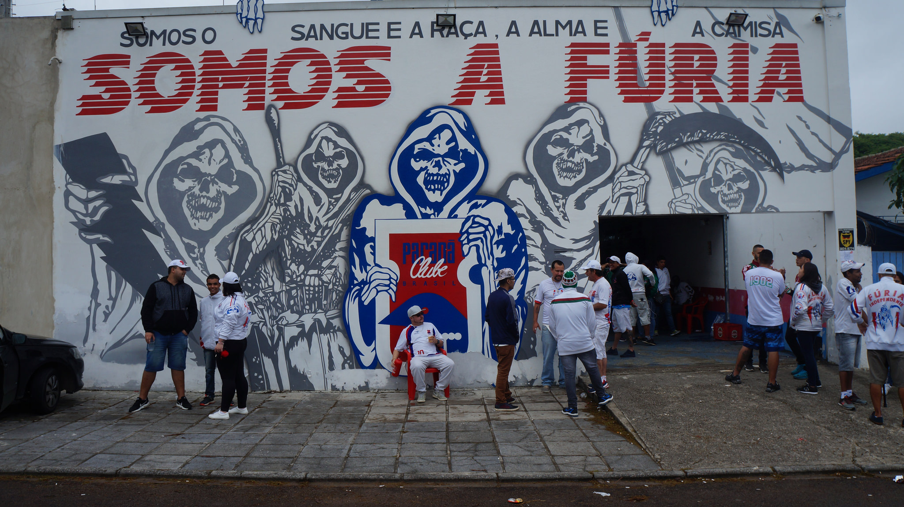

O Paraná Clube é um clube de futebol brasileiro da cidade de Curitiba, estado do Paraná, fundado em 19 de dezembro de 1989,[2] após fusão ocorrida entre os clubes Colorado Esporte Clube e Esporte Clube Pinheiros.
Conhecido carinhosamente como Tricolor da Vila, em referência às 3 cores e alcunha das suas tradicionais praças esportivas, a Vila Capanema, fundada em 1947, cujo nome oficial é Estádio Durival Britto e Silva e a Vila Olímpica do Boqueirão, fundada em 1983, cujo nome oficial é Estádio Presidente Erton Coelho Queiroz, tem como mascote a Gralha-azul, ave-símbolo de seu estado,[3] além de outro símbolo local, a araucária, ambas gravadas em seu escudo. O Paraná Clube sagrou-se sete vezes campeão paranaense,[4] seis durante a Década de 1990, na qual teve a supremacia do futebol do Paraná, sendo o terceiro clube em atividade com mais títulos nesse estado.
nível nacional, foi campeão brasileiro da Série B em 1992, e campeão do Módulo Amarelo da Copa João Havelange em 2000 (competição equivalente à Série B, mas ainda não reconhecida pela CBF).[5] O Clube se manteve na primeira divisão nacional até 2007, mesmo ano em que disputou a Copa Libertadores da América, retornou posteriormente em 2018 e foi despromovido no mesmo ano.
Até o final da temporada de 2022, o Tricolor disputou 1881 jogos oficiais, 756 vitórias, 503 empates e 622 derrotas.[6] Seus principais adversários são o Coritiba Foot Ball Club, com quem faz um dos clássicos de maior rivalidade do futebol paranaense, o Paratiba[7], Também possui rivalidade com o Club Athletico Paranaense, cujo duelo se chama Paratico ou Derby da Rebouças.
A história da A.E.C.S.R.T.O. Fúria Independente Tricolor começou com muitas dificuldades. Com muito trabalho e com o passar do tempo às adversidades foram sendo superadas e o pensamento grande foi montando nossa estrutura. Hoje em dia somos uma das MAIORES e mais ORGANIZADAS do Brasil
Em 1982, foi fundada por Orlando Zarowny, a Torcida Fúria Colorada
Tempos difíceis, começo de tudo e a divulgação de um nome que foi se tornando forte; FÚRIA. Com a desorganização do extinto colorado, que foi se enfraquecendo no final da década de 80, a torcida passou por seus piores dias. Com a extinção do mesmo, em dezembro de 1989, foi fundado o GRANDE PARANÁ CLUBE!
A Torcida Fúria Colorada tornou-se a Torcida Organizada Fúria Tricolor. O clube nasceu gigante e a Fúria foi ganhando força até ser a maior torcida organizada do clube. Com o crescimento da Torcida Independente Paranista, atritos tornaram-se freqüentes entre as duas facções. Com isso, houve contato entre as duas diretorias.
No dia 29/09/1993, no bar do "seu fernando" (que era o local onde as torcidas se reuniam), os integrantes das duas torcidas se estranharam e um grande tumulto se formou. Os diretores separaram a confusão e logo os ânimos foram contidos. Neste mesmo dia, uma extensa conversa começou. Todos falavam em união pelo Paraná Clube quando surgiu um grito: FÚRIA INDEPENDENTE, NINGUÉM PODE COM A GENTE! Assim fundamos a MAIOR EXPRESSÃO DE AMOR AO PARANÁ; A TORCIDA ORGANIZADA FÚRIA INDEPENDENTE TRICOLOR.
